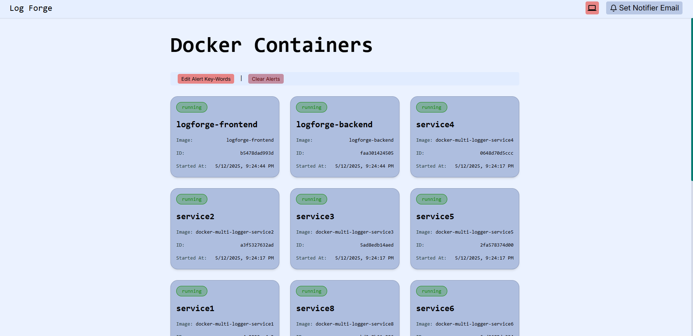

// blog.index
LogForge field notes
Practical guides for Docker monitoring, remote hosts, alert routing, and the parts of self-hosting that usually hide in the margins.
Monitoring EC2 With LogForge, Without Turning Your Afternoon Into an IAM Side Quest
Run LogForge Central on a machine you control, enroll EC2 Docker hosts as agents, and keep inbound security group rules focused on Central instead of every instance.
Read article